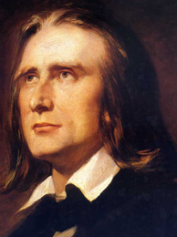

As a composer, Liszt was one of the most prominent representatives of the New German School (Neudeutsche Schule). He left behind an extensive and diverse body of work in which he influenced his forward-looking contemporaries and anticipated many 20th-century ideas and trends. Some of his most notable musical contributions were the invention of the symphonic poem, developing the concept of thematic transformation as part of his experiments in musical form, and making radical departures in harmony.